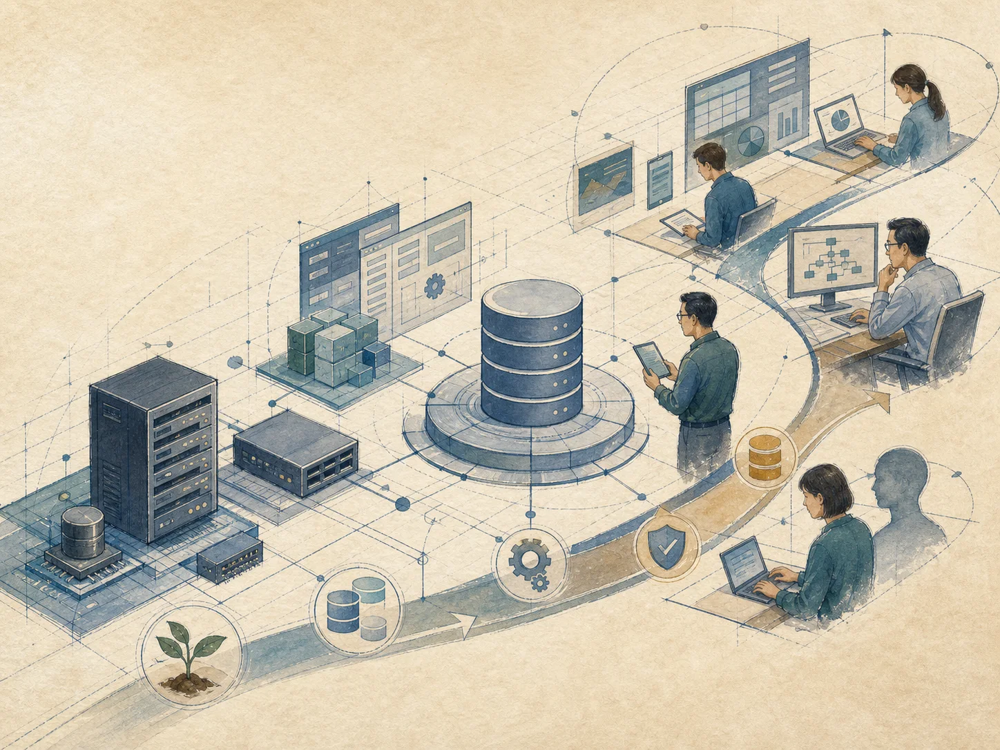
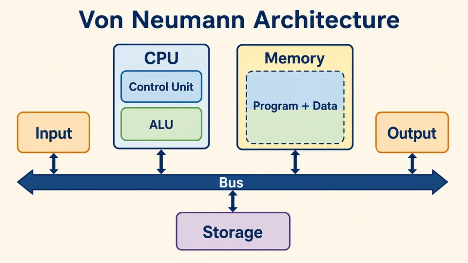
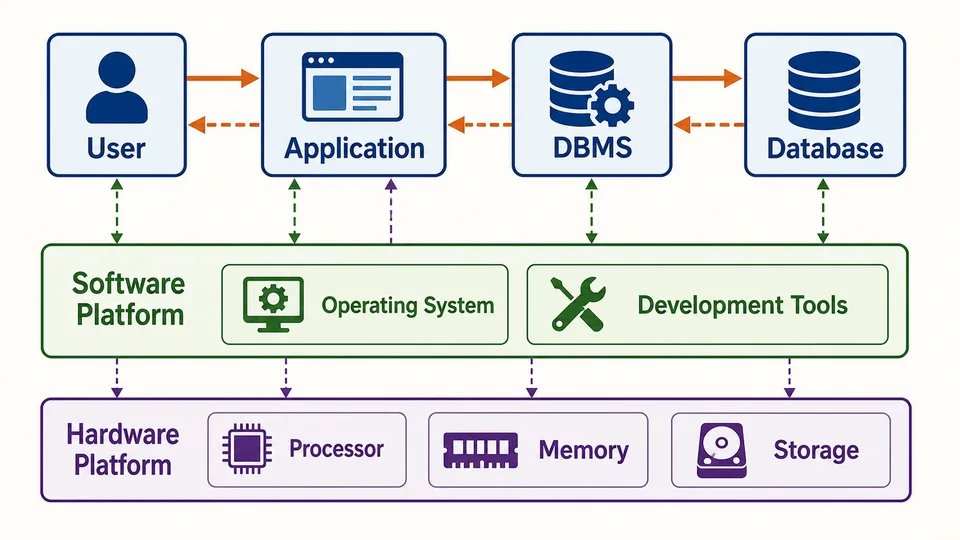

处理器
处理器为数据库管理、应用运行和查询处理提供计算能力

数据库、DBMS、应用、软硬件与人员
 VER. 2608.2
Built with impress.js
VER. 2608.2
Built with impress.js
数据库系统由数据、硬件、软件和人员组成，彼此职责不同
核心要素、平台与人员说明数据库系统的要素如何协作
DBS = DB + DBMS + APP + Platform + DBA + Users
| 核心要素 | 平台 Platform | 人员 |
|---|---|---|
| 数据库、DBMS、应用 | 硬件、软件 | DBA、系统分析员、数据库设计员、应用程序员、最终用户 |
平台 Platform=硬件 Hardware+软件 Software；数据库管理系统和应用系统属于软件。平台支撑数据库系统运行
平台支撑运行；数据库管理系统、数据库和应用提供能力，人员承担职责
能否持续处理和保存数据，依赖底层硬件资源

处理器为数据库管理、应用运行和查询处理提供计算能力
暂存正在处理的数据和高频访问的数据
长期保存数据库记录、索引和后备副本
处理器、存储器和存储设备的演进会推动数据库存储与查询技术演进
数据库系统的行为，取决于软件、配置和人员
| 描述 | 主要归属 | 原因 |
|---|---|---|
| 增加内存后查询更快 | 硬件平台 | 可能增加可用运行资源，但仍需结合应用、DBMS 和配置判断 |
| 设计成绩表的结构 | 设计员/DBA | 定义模式与约束 |
| 提供成绩查询功能页面 | 应用系统 | 实现面向用户的业务功能 |
| 规定谁可以修改成绩 | DBA 与 DBMS | DBA 制定权限策略，DBMS 执行访问控制 |
软件平台由操作系统、DBMS、开发环境和应用系统共同组成
提供进程、文件、内存和设备等基础运行环境
定义、组织、存储、操纵、控制和维护数据库
变成语言、编译系统和应用开发工具支持编写、调试和部署应用
应用系统把具体业务流程实现为用户可以操作的功能
应用系统面向业务；每次请求都由应用系统、DBMS 和操作系统协作完成
在系统内部，每个功能都需要多个软件平台共同完成

主流程：学生点击“查看成绩”，应用系统将用户请求转换为业务请求，DBMS 处理数据访问，访问结果返回应用并显示
支撑：操作系统和硬件为 DBMS 与数据库提供运行、存储支撑；开发工具用于开发和部署
应用程序员依据外模式开发；DBMS 管理逻辑和物理细节
不同角色在不同阶段参与，拥有不同的数据视图和责任
| 角色 | 主要工作 | 主要关注 |
|---|---|---|
| DBA | 参与设计；负责运行、权限、安全、性能、备份恢复与重构 | 系统状态、内模式与长期运行 |
| 系统分析员 | 分析需求、规范说明和总体设计 | 业务目标与总体方案 |
| 数据库设计员 | 确定数据并参与各级模式设计，与用户、系统分析员和 DBA 协作 | 全局结构与各级模式 |
| 应用程序员 | 依据外模式开发应用程序 | 业务流程与用户功能 |
| 最终用户 | 通过应用系统完成业务活动 | 自己需要的数据与操作 |
实际组织中，DBA 的职责可以由多人分担
| 责任类别 | 典型工作 |
|---|---|
| 设计与定义 | 参与外模式、模式和内模式设计，协助确定数据定义 |
| 用户支持与培训 | 帮助用户理解和使用系统，处理日常运行问题并提供培训 |
| 运行控制与安全 | 管理访问权限，维护安全性与完整性，监视运行状态 |
| 性能改进与重组 | 监视空间利用率与处理效率，改进和重组数据库 |
| 转储与恢复 | 制定转储、备份和恢复策略，维护后备副本与日志 |
| 系统重构 | 参与模式和内模式的重构，并与应用团队协作调整系统 |
系统分析员澄清需求，数据库设计员组织数据，应用程序员实现功能
澄清业务目标、范围和规范，参与总体设计，把用户需求转化为可执行的系统说明
确定数据并参与各级模式设计，与用户、分析员和 DBA 核对数据组织与运行方案
以外模式为基础实现界面、业务流程和数据库访问程序
应用程序员 → 外模式；设计员和 DBA →模式与内模式
最终用户无需直接管理数据库，但需要参与需求分析和反馈
最终用户通过应用界面使用外模式提供的局部数据，不直接面对内模式
最终用户看到的是针对自己工作任务的数据视图，而不是数据库的内部结构
不同角色接力协作，需求变化时回到分析与设计
最终用户与系统分析员提出并梳理业务需求
数据库设计员与 DBA 设计模式、外模式和运行方案
应用程序员依据外模式实现界面、业务流程和访问程序
最终用户通过应用完成业务，DBMS 按定义、权限和完整性规则管理数据
DBA 监控、调优、备份、恢复并参与系统重构；需求变化时回到分析与设计
定位主要角色、相关层次或运行平台，并说明判断依据
判断依据包括主要角色、相关层次或运行平台，以及选择该角色的理由
教学系统新增“培养方案完成度”查询
开发团队提出：为成绩查询增加索引；数据库服务器更换存储设备；教师反馈成绩录入规则不清楚；发生了一次数据库故障，需要恢复到正确状态
判断的关键是理解变化经过的数据、软件、平台和人员协作链
模式与映像是管理分层，数据库系统组成涉及协作，未来还有部署与连接
| 比较维度 | 三级模式结构 | 系统组成 | 系统体系结构 |
|---|---|---|---|
| 核心对象 | 三级模式、两级映像 | 平台、DBMS、应用和人员 | 要素的部署与连接方式 |
| 主要判断 | 变化在哪一层，哪一级映像吸收 | 哪个角色负责，依赖哪些平台 | 集中式、客户-服务器、并行、分布式或云 |
| 直接价值 | 数据独立性与应用稳定性 | 设计、开发、运行和维护协作 | 理解系统的外部组织方式 |
体系结构回答的问题是：数据库系统各要素如何组织与连接
数据库系统的长期运行依赖平台协作和清晰的职责边界
遇到资源或性能问题，区分硬件容量、DBMS/存储组织、应用逻辑和配置
遇到“某个请求应该怎样被处理”时，沿着应用、DBMS 和操作系统逐步追踪
遇到“某个问题应该谁来负责”时，按需求、设计、开发、使用和维护分配职责
理解数据库系统的组成，把设计、开发、运行和维护放入同一体系